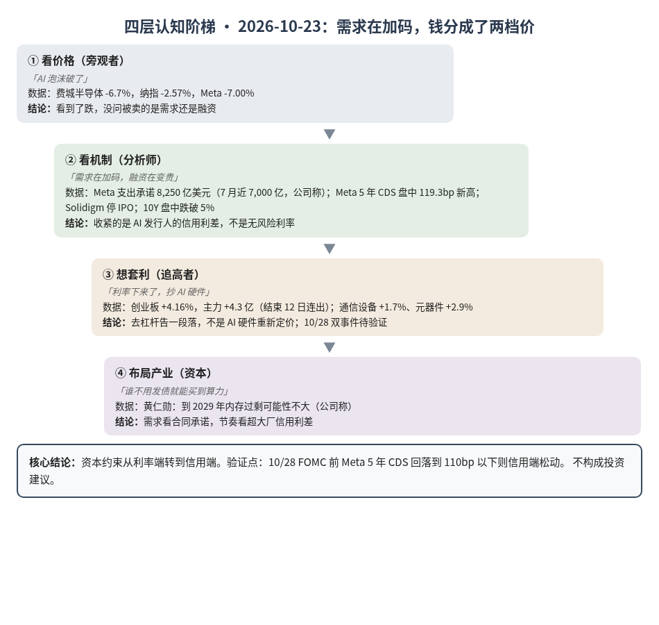
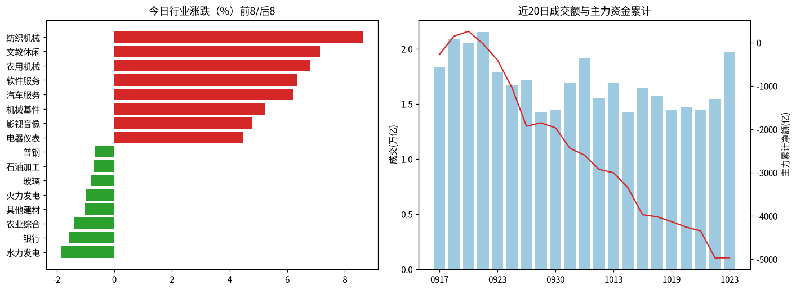
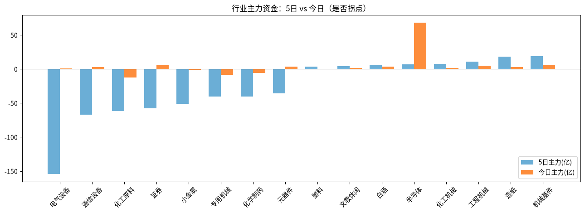

A股投研日报 · 2026-10-23（四层认知版）
- 主线
- AI 需求承诺在加码，资本约束从利率端转到信用端；A股借利率回落止跌。
- 最重要变化点
- 费城半导体隔夜 -6.7%，创业板指却 +4.16% 收 2,684.10，主力 +4.3 亿元，结束 12 日连续净流出。
- 机制含义
- Meta 支出承诺升到 8,250 亿美元而其 CDS 创新高，美债 10Y 跌破 5%：钱对国债变便宜，对 AI 发行人变贵。
- 下一个观察点
- 10/28 FOMC 与海力士财报同日；FOMC 前 Meta 5 年 CDS 回落到 110bp 以下则信用端松动，续创新高则 AI 链反弹难持续。
本报告为基于公开数据的研究分析，不构成投资建议。
今日市场概况
数据管道速览（Tushare 收盘数据，规则生成，正文判断见下文）
- 指数：上证指数 +0.89% 收 3,690.48，创业板指 +4.16% 收 2,684.10；深证成指 +2.79%、科创50 +3.04%、上证50 +1.21%、沪深300 +1.71%、中证500 +2.39%、中证1000 +2.38%（Tushare）。
- 量能与宽度：成交 19,729 亿元（20 日均 16,852 亿元）；上涨 4,526 家 / 下跌 909 家，上涨占比 81.2%，个股中位数 +1.6%。
- 主力资金：全 A 主力 +4.3 亿元，连续第 1 日净流入。
- 行业：主力流入居前 半导体（+68.1 亿）、软件服务（+32.2 亿）、互联网（+9.8 亿）；流出居前 银行（-29.9 亿）、化工原料（-12.8 亿）、建筑工程（-10.0 亿）。
- 龙虎榜 / 北向：机构专用席位合计 +1.30 亿元；沪深股通成交前五 宁德时代、中际旭创、药明康德、贵州茅台、新易盛（成交额≠净买入）。
变化点
方法：四层认知阶梯 + 历史周期律。数据 Tushare（见附录）。不构成投资建议。
一、世界观定位
阶段不变，回退条件不变。楚汉层今天分叉：10Y 盘中跌破 5%、2Y 跌 18bp 至 4.64%，市场押注下周加息概率降到 7% 源；但 AI 发行人信用变贵。五盏灯 4 黄 1 红未变，AI/半导体灯内铜/金比 🟡→🟢（1.604），实际利率 2.76% 仍红。原型沿用“萧何转漕”：粮价分了两档，国库便宜、军粮贵。
二、变化一（主变化）：Meta 加码承诺，市场卖信用、买国债
第1层 · 看价格：「AI 泡沫破了」。纳指 -2.57%、Meta -7.00% 源，费城半导体 -6.7% 源。结论：看到了跌，没问被卖的是需求还是融资。
第2层 · 看机制：「需求在加码，融资在变贵」。Meta 未来支出承诺约 8,250 亿美元，7 月近 7,000 亿（公司称） 源；其 5 年 CDS 盘中 119.3bp，创上市新高 源；海力士停掉 Solidigm IPO 源。同时避险盘把 10Y 压到 5% 以下 源。风险敞口接口：复核后有效断供 Δ$≈0。结论：需求端是买方合同锁定的自然缺口；收紧的是 AI 发行人的信用利差，不是无风险利率推断。
第3层 · 想套利：「利率下来了，抄 AI 硬件」。A股主力转为净流入 +4.3 亿，半导体 +68.1 亿领先；但通信设备仅 +1.7%、元器件 +2.9%，弱于创业板。结论：止跌是去杠杆告一段落，不是 AI 硬件重新定价；路径被 10/28 双事件焊死，待验证。
第4层 · 布局产业：「谁不用发债就能买到算力」。黄仁勋称到 2029 年出现内存过剩的可能性不大（公司称） 源。结论：只看环节——需求看合同承诺，节奏看超大厂信用利差；现金流自给的买方和最慢的物理环节约束最硬。
检查清单：缺口性质 = 需求侧合同锁定，非人为；替代弹性 = 资本端由债转股、租赁，均在变贵；领先 = CDS、发行取消，滞后 = 季报、股价。
| 案例 | 核心论点 | 今日数据 | 判定 |
|---|---|---|---|
| 案例7 字节贷款 | 高利率下债务由弹药变负担 | Meta CDS 新高；Solidigm 停 IPO | 强化 |
| 案例8 另类数据 | 过程领先结果 | CDS 先于资本开支指引变化 | 方法论强化 |
三、变化二（人形机器人领涨）：情绪脉冲，不是业绩
第1层：「机器人是下一个产业」。领涨为人形机器人、减速器；龙虎榜机构净买入居首亦为机器人公司。第2层：多家异动公告自称机器人业务未形成收入或尚在送样 源 源。结论：自然缺口未出现，属事件驱动；对照案例9（宇树）：情绪脉冲与基本面背离，标为第3层陷阱。
四、上一交易日验证点回顾（10/22 → 10/23）
| # | 验证点 | 今日读数 | 判定 |
|---|---|---|---|
| 1 | 通信设备+元器件主力 < -100 亿 / 转净流入 | +3.0 亿、+3.7 亿 | 命中：转净流入 |
| 2 | 创业板收复 2,650 / 跌破 2,500 | 2,684.10 | 命中：弱确认 |
| 3 | 10Y 上穿 5.2% / 连续 2 日 <5.0% | 10/22 盘中跌破 5%；FRED 10/21 为 5.13%，10/22 未出 | 待补充 |
| 4 | 10/28 海力士财报与 FOMC | 未到期 | 待验证 |
五、供应链风险敞口（人工复核版）
脚本版见 risk_section_20261023.md。口径为 GB300/NVL72 当量柜年化系统价值；Δ$ 为事件类型假设模板，仅用于排序，非预测。 基线沿用 10/21：年化 EL $5.77B。脚本 4 条，误匹配 4 条。复核后今日有效断供 Δ$≈0。采集降级：巨潮连接超时，GDELT 限流。
六、机会表（产业/环节层面，不构成投资建议）
| 机会 | 变化信号 | 认知层级 | 关键风险 |
|---|---|---|---|
| 买方合同锁定的最慢物理环节（载板、存储） | Meta 承诺 8,250 亿美元 | 第2层已查证 + 第4层方向 | 超大厂信用利差继续走阔 |
| “利率下来抄 AI 硬件” | 10Y 跌破 5% | 第3层（待验证） | 10/28 双事件、油价 |
| 人形机器人题材 | 异动公告称未形成收入 | 第3层（陷阱） | 情绪退潮 |
中长期展望（3–12 个月与 2027）
3–12 个月：需求端未松，Meta 承诺上修支持 G12、G25；约束沿 HBM→CoWoS→载板迁移（G19）。节奏由资本成本决定，且主变量从 10Y 转向 AI 发行人信用利差推断；估值灯🔴、实际利率 2.76%。
2027：总闸门仍是四大云厂商 2027 资本开支指引（P023：合计 ≥8,500 亿美元，概率初稿 55%）。
什么会改变展望：①超大厂 CDS 持续新高且出现发债或租赁项目取消，下调节奏判断；②布伦特站稳 115 美元以上推高通胀、10Y 重回 5.2% 以上，利率端再度收紧；③四大 2027 指引低于 2026 中值约 7,325 亿美元，G12、G25 受挑战。
七、明日/本周验证点（可证伪）
- 10/26 通信设备 + 元器件主力合计再转为 < -50 亿元，则今天只是技术性反弹。
- 创业板守 2,650 为止跌确认；跌破 2,576.90（10/22 收盘）则反弹失败。
- 10Y 连续 2 日收盘 <5.0% 则利率端降级；上穿 5.2% 则升级。
- 10/28 海力士营业利润明显低于一致预期 76.96 万亿韩元或 FOMC 加息，则 AI 链进入需求与资本双重检验。

一句话总结：国债在变便宜，AI 发行人的钱在变贵；需求没松，约束换了位置。
本报告为基于公开数据的研究分析，不构成任何投资建议。
附录：市场数据（证据底稿）


| 收盘 | 今日% | 5日% | 20日% | MA20 | 成交(亿) | |
|---|---|---|---|---|---|---|
| 上证指数 | 3,690.48 | 0.89 | -0.69 | -4.78 | 3,803.88 | 8,986.67 |
| 深证成指 | 11,673.83 | 2.79 | -1.09 | -12.95 | 12,539.07 | 5,446.25 |
| 创业板指 | 2,684.10 | 4.16 | -3.18 | -18.62 | 3,006.21 | 2,301.22 |
| 科创50 | 1,345.51 | 3.04 | -0.97 | -16.23 | 1,472.27 | 969.03 |
| 上证50 | 2,757.68 | 1.21 | -0.38 | -3.04 | 2,806.64 | 1,704.86 |
| 沪深300 | 4,105.33 | 1.71 | -1.57 | -7.96 | 4,295.86 | 5,582.05 |
| 中证500 | 6,814.44 | 2.39 | 0.62 | -10.98 | 7,216.20 | 3,369.41 |
| 中证1000 | 6,734.55 | 2.38 | 0.79 | -10.79 | 7,130.51 | 3,776.89 |
行业资金热力（按5日主力净额排序，前8/后8）
| industry | 今日% | 5日% | 20日% | 今日主力(亿) | 5日主力(亿) | 资金连续天数 |
|---|---|---|---|---|---|---|
| 机械基件 | 5.2 | 10.5 | 39.9 | 5.5 | 18.7 | 2.0 |
| 造纸 | 0.9 | -4.5 | -2.4 | 2.7 | 18.0 | 21.0 |
| 工程机械 | 3.9 | 6.6 | 0.1 | 4.9 | 11.0 | 2.0 |
| 化工机械 | 2.5 | 6.2 | -9.9 | 1.2 | 7.3 | 1.0 |
| 半导体 | 4.2 | 2.2 | 14.5 | 68.1 | 7.2 | 1.0 |
| 白酒 | 2.2 | -0.7 | 4.9 | 3.8 | 5.8 | 2.0 |
| 文教休闲 | 7.1 | 12.8 | 20.9 | 1.7 | 4.4 | 1.0 |
| 塑料 | 0.3 | 5.0 | 70.1 | -0.1 | 3.3 | -2.0 |
| 电气设备 | 3.8 | -3.2 | -8.0 | 1.0 | -154.2 | 1.0 |
| 通信设备 | 1.7 | -0.4 | -21.8 | 3.0 | -67.2 | 1.0 |
| 化工原料 | 1.8 | -3.8 | -11.0 | -12.8 | -61.5 | -10.0 |
| 证券 | 2.1 | -2.0 | -1.9 | 5.6 | -57.5 | 1.0 |
| 小金属 | 2.5 | -1.3 | 31.7 | -1.1 | -51.3 | -10.0 |
| 专用机械 | 3.9 | 3.3 | 0.8 | -8.7 | -40.6 | -2.0 |
| 化学制药 | 2.0 | -2.2 | 26.7 | -5.9 | -40.3 | -3.0 |
| 元器件 | 2.9 | 2.5 | -14.5 | 3.7 | -35.5 | 1.0 |
市场情绪时间序列（近10日）
| trade_date | 成交(亿) | 上涨占比% | 主力净额(亿) | 个股中位涨跌% |
|---|---|---|---|---|
| 20261012 | 15507.5 | 21.0 | -329.2 | -1.7 |
| 20261013 | 16889.1 | 52.3 | -76.8 | 0.2 |
| 20261014 | 14264.0 | 17.6 | -348.2 | -1.9 |
| 20261015 | 16457.2 | 7.7 | -620.8 | -3.0 |
| 20261016 | 15690.7 | 59.3 | -47.2 | 0.5 |
| 20261019 | 14487.9 | 40.9 | -111.4 | -0.4 |
| 20261020 | 14715.3 | 67.9 | -127.9 | 1.0 |
| 20261021 | 14420.6 | 35.6 | -86.3 | -0.4 |
| 20261022 | 15418.6 | 9.6 | -623.7 | -2.5 |
| 20261023 | 19728.5 | 81.2 | 4.3 | 1.6 |
今日上涨4526家/下跌909家，涨幅≥9.8% 150家、跌幅≤-9.8% 17家¹。
龙虎榜侧写：机构专用席位合计 +1.30 亿；净买入居前 宇树科技(+2.41亿)、海天瑞声(+1.45亿)、兆威机电(+1.44亿)，净卖出居前 凡拓数创(-2.42亿)、福莱新材(-1.67亿)、澳弘电子(-0.80亿)。 沪深股通活跃股：成交前五为宁德时代、中际旭创、药明康德、贵州茅台、新易盛（成交额≠净买入）。
注：¹涨跌停为按±9.8%阈值近似（limit_list_d无权限）。²行业为Tushare stock_basic分类自行聚合（sw_daily/ths_daily/行业资金流接口无权限），成交加权、剔除N/C新股，成分≥8只。³主力=大单+特大单净额（moneyflow）。⁴2024年8月起北向每日净买入停止披露，moneyflow_hsgt/hsgt_top10数值为成交口径，不可解读为净流入。⁵新闻/公告接口无权限，改用新浪财经7x24公开快讯自动抓取+人工补充。
接口状态：trade_cal:OK；stock_basic:OK；index_daily:OK；moneyflow_hsgt:OK；hsgt_top10:OK；top_list:OK；top_inst:OK；index_dailybasic:OK；新浪7x24(公开):OK 3596条（10-22 14:49 起）